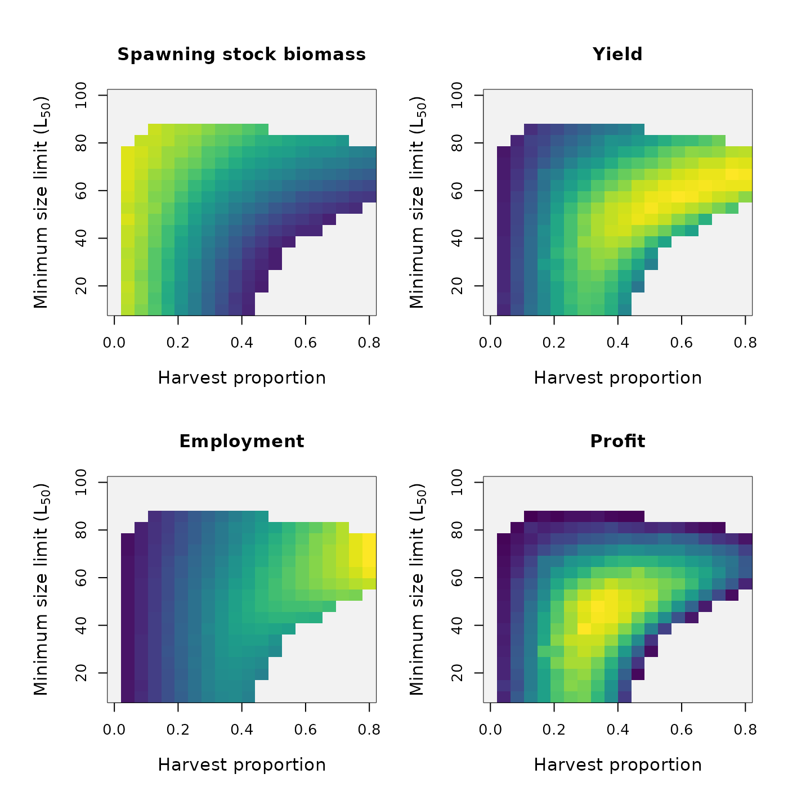
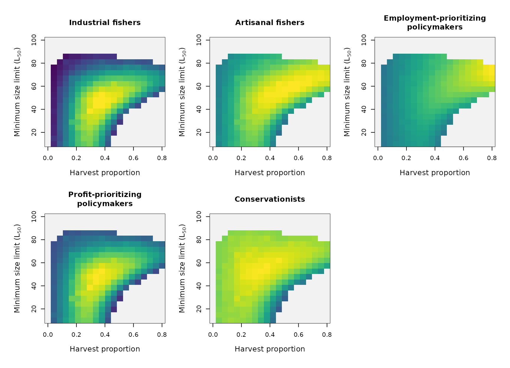

Safe operating spaces 2D (with Evolution)
Jaideep Joshi
28 March 2022
jss_calcs_hxL_evol.Rmd
nsteps_jss=100
re_simulate_global = F
params_file = "../params/cod_params.ini"
# Create a prototype fish as usual
fish = new(Fish, params_file)
sim = new(Simulator, fish)
sim$equilibriateNaturalPopulation(params_file, 1.93e3, 5.61, 5e6)## [1] 1.404348e+09 0.000000e+00 0.000000e+00 -4.925584e+08 0.000000e+00
## [6] 0.000000e+00 -1.249998e+08 -3.675586e+08 3.311520e+09 7.747450e+00
## [11] 2.981318e+09 5.600000e+08 1.270000e+03 7.901740e-01 1.593829e-01
## [16] 1.302985e+02 9.227553e+01 5.676990e-01 5.008945e-02 0.000000e+00
## [21] 0.000000e+00
fish$trait_variances = c(1, 1, 1, 1, 1, 0)*(0.05)^2
plot_timeseries = function(res_ibm, pop, h, nsteps=200){
d = pop$get_state()
table(d$age)
par(mfrow = c(4,3), mar=c(4,4,1,1))
plot(y=res_ibm$ssb/1e9, x=seq(1,nsteps,1), ylab="SSB (MT)", xlab="Year", col="cyan3", type="l")
plot(y=res_ibm$yield/1e9, x=seq(1,nsteps,1), ylab="Yield (MT)", xlab="Year", col="cyan3", type="l")
plot(y=res_ibm$employment.sea, x=seq(1,nsteps,1), ylab="Employment at sea (person-years)", xlab="Year", col="cyan3", type="l")
plot(y=res_ibm$employment.shore, x=seq(1,nsteps,1), ylab="Employment on shore (person-years)", xlab="Year", col="cyan3", type="l")
plot(y=res_ibm$profit.sea/1e9, x=seq(1,nsteps,1), ylab="Profit at sea (Billions NOK)", xlab="Year", col="cyan3", type="l")
plot(y=res_ibm$profit.shore/1e9, x=seq(1,nsteps,1), ylab="Profit at shore (Billions NOK)", xlab="Year", col="cyan3", type="l")
d = pop$get_state()
d1 = d %>% group_by(age) %>% summarize(mat = length(which(isMature))/length(isMature))
plot(mat, type="l")
points(d1$mat~I(d1$age-1), type="o", col="cyan3") # Decrement age to get the right maturation prob (see note above)
plot(res_ibm$r0~seq(1,nsteps,1), xlab="Year", ylab= "r0", col="cyan3", type="p", ylim=c(0,30))
abline(h=21.77, col="black")
matplot(y=cbind(res_ibm$survival_mean, res_ibm$maturity, res_ibm$Nrel), x=seq(1,nsteps,1), xlab="Year", ylab= "p_survival / maturity / Nrel", col=c("cyan3", "magenta3", "yellow3"), type="l", lty=1, ylim=c(0,1.2))
matplot(y=cbind(res_ibm$factor_dg, res_ibm$factor_dr), x=seq(1,nsteps,1), xlab="Year", ylab= "dl_ratio, r_ratio", col=c("cyan3", "magenta3"), type="l", lty=1)
matplot(y=cbind(res_ibm$length90, res_ibm$max_length), x=seq(1,nsteps,1), xlab="Year", ylab= "Length (90 %ile)", col=c("cyan3", "cyan4"), type="l", lty=1)
dist = table(d$age, d$length)
image(x=as.numeric(rownames(dist)), y = as.numeric(colnames(dist)), z=log(1+3*log(dist)), col=scales::viridis_pal()(100), xlab="Age", ylab="Length")
}
plot_traits_now = function(traits){
par(mfrow = c(3,2), mar=c(5,5,5,1), oma=c(1,1,1,1), cex.lab=1.5, cex.axis=1.5)
hist(traits$alpha1)
hist(traits$gsi)
hist(traits$pmrn_intercept)
hist(traits$pmrn_slope)
hist(traits$pmrn_width)
hist(traits$s0)
}Simulate a status quo population with \(h = 0.41\), \(L50 = 45\), \(T = 5.6\).
pop_sq = new(Population, fish)
pop_sq$readParams(params_file, F)## [1] 0
pop_sq$set_superFishSize(2e6)
h_sq = 0.0
lf_sq = 45
t_sq = 5.61
nsteps_sq = 100
res_ibm_sq = sim$simulate(pop_sq, lf_sq, h_sq, nsteps_sq, 1.93e3, t_sq, T)
plot_timeseries(res_ibm_sq, pop_sq, h_sq, nsteps_sq)## Warning in log(1 + 3 * log(dist)): NaNs produced
traits = pop_sq$get_traits()
plot_traits_now(traits)Continue population under different conditions
nsteps = 150
h = 0.5
lf = 45
# pop1 = pop_sq ## NO! This creates a shallow copy
res_ibm = sim$simulate(pop_sq, lf, h, nsteps, 1.93e3, 6.61, F)
plot_timeseries(res_ibm, pop_sq, h, nsteps)## Warning in log(1 + 3 * log(dist)): NaNs produced
plot_traits_now(pop_sq$get_traits())Thus, we can plot the two populations together. At the end of this plot, is our status-quo population which we will use as a starting point for JSS simulations.
Multiple populations
# pop$par$dsea = 0.054
hvec = seq(0, 0.8, length.out = 20)
lfvec = seq(10, 100, length.out = 20)
tvec = c(5.61)
saved_filename = paste0("outputs/res_ibm_hxL_T",tvec[1],"_evol_n",nsteps_jss,".Rdata")
re_simulate = re_simulate_global | !file.exists(saved_filename)
if (re_simulate){
pop_sq$set_superFishSize(4e6)
res_ibm_full = sim$simulate_multi_2d(pop_sq, tvec, lfvec, hvec, nsteps_jss, 1.93e3, F)
save(res_ibm_full, file = saved_filename)
} else{
load(saved_filename)
}
# Wrapper for image to use gray for NA
my.image <- function(x,y,z, zlim, col, na.color='gray95', outside.color='white', ...)
{
newz.na <- zlim[2]+(zlim[2]-zlim[1])/length(col) # new z for NA
newz.outside <- zlim[2]+2*(zlim[2]-zlim[1])/length(col) # new z for values outside zlim
z[which(is.na(z>zlim[2]))] <- newz.na # we affect newz.outside
# z[which(z<zlim[1] | z>zlim[2])] <- newz.outside # same for newz.na
zlim[2] <- zlim[2]+2*(zlim[2]-zlim[1])/length(col) # we finally extend the z limits to include the two new values
col <- c(col, na.color, outside.color) # we construct the new color range by including: na.color and outside.color
image(x,y,z, zlim=zlim, col=col, useRaster = T, ...) # we finally call image(...)
}
# Function to plot color bar
color.bar <- function(lut, min, max=-min, nticks=11, ticks=seq(min, max, len=nticks), title='') {
scale = (length(lut)-1)/(max-min)
plot(c(0,10), c(min,max), type='n', bty='n', xaxt='n', xlab='', yaxt='n', ylab='', main=title)
axis(2, ticks, las=1)
for (i in 1:(length(lut)-1)) {
y = (i-1)/scale + min
rect(0,y,10,y+1/scale, col=lut[i], border=NA)
}
}Utilties
arr = res_ibm_full[,,,,1:4]
d = sim$max_avg_utils_2d(c(4,length(tvec), length(lfvec),length(hvec),nsteps_jss), arr)
utils = array(data=d, dim=c(length(hvec),length(lfvec),length(tvec), 4))
for (i in 1:4){
utils[,,,i][which(utils[,,,4]<0)]=NA
}
par(mfrow=c(2,2), mar=c(5,5,4,1), oma=c(1,1,1,1), cex.lab=1.2)
for (i in 1:4){
my.image(x=hvec, y=lfvec, z=utils[,,1,i], col=scales::viridis_pal()(100), zlim=c(0,1), main=c("Spawning stock biomass","Yield","Employment","Profit")[i],
xlab="Harvest proportion", ylab=expression("Minimum size limit (L"[50]*")"))
}
Stakeholder satisfaction
arr = res_ibm_full[,,,,1:4]
ss = sim$stakeholder_satisfaction_2d(c(4,length(tvec), length(lfvec),length(hvec),nsteps_jss), arr)
scs = array(data=ss, dim=c(length(hvec),length(lfvec),length(tvec), 5))
for (i in 1:5){
scs[,,,i][which(is.na(utils[,,,4]))]=NA
}
par(mfrow=c(2,3), mar=c(5,5,4,1), oma=c(1,1,1,1), cex.lab=1.2)
for (i in 1:5){
my.image(x=hvec, y=lfvec, z=scs[,,1,i], col=scales::viridis_pal()(100), zlim=c(0,1), main=c("Industrial fishers", "Artisanal fishers", "Employment-prioritizing\npolicymakers", "Profit-prioritizing\npolicymakers", "Conservationists")[i],
xlab="Harvest proportion", ylab=expression("Minimum size limit (L"[50]*")"))
}
JSS
JSS = array(dim=c(length(hvec),length(lfvec),length(tvec),3))
JSS[,,,1] = apply(scs, c(1,2,3), min)
JSS[,,,2] = apply(scs, c(1,2,3), mean)
JSS[,,,3] = 1/apply(1/scs, c(1,2,3), mean)
for (i in 1:3){
scs[,,,i][which(is.na(utils[,,,4]))]=NA
}
par(mfrow=c(2,2), mar=c(5,5,4,1), oma=c(1,1,1,1), cex.lab=1.2)
cols = scales::viridis_pal()(100)
for (i in 1:3){
my.image(x=hvec, y=lfvec, z=JSS[,,1,i], col=cols, zlim=c(0,1), main=c("JSS (arithmatic mean)","JSS (harmonic mean)","JSS (minimum)")[i],
xlab="Harvest proportion", ylab=expression("Minimum size limit (L"[50]*")"))
}
color.bar(cols, 0,1, nticks = 5)